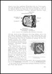
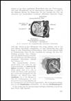

Deutsche Flugzeug-Ausrüstungen 1928 - 1945


Instrumente und Schaltgeräte
59,00€
2,16 GB
Kompendium, gesamt 6.750 Seiten bestehend aus:
1. Firmenunterlagen
1.1 ASKANIA Bordgeräte
Aero 1- 95, Luftfahrt-Instrumente 1933 – 1935
Aero 1 – 80, Luftfahrt-Instrumente 1934 – 1936
Aero 104a, Luftfahrt-Instrumente 1935
Aero 111 Sammelmappe Bordgeräte, ca. 1939
Aero 210 – 212, Kurssteuerungen, 1939
Einbauvorschriften für Luftfahrt-Geräte, 1936 – 1939
Bordgeräte für Segelflugzeuge und Motorflugsport,1935 u. 1939
Askania-Einbau-Aero-LiBiAskania-Einbau-Aero-LiBi%20(3)Askania-Bordger-LiBi%202Askania-Bordger-LiBi 3

1.2 BOSCH Luftfahrt-Geräte
Flugzeug-Ausrüstung für Flugmotoren, 1929
Erzeugnisse für Flugzeuge, 1934 und 1936
Angebots-Zeichnungen von Bosch-Flugzeug-Zubehör, 1937
Luftfahrt-Geräte. Katalog, 1940 - 1942
Luftfahrt-Geräte, Wartung und Instandsetzung, 1942
Luftfahrt-Geräte, Geräte-Handbuch, 1942
Technische Druckschriften Anlasser, Generatoren, Zündung, Zündkerzen, Entstörung,
Schalter und Schaltschütze, Elektromotoren, 1937
Bosch%20Luftfahrtgeräte-CD-Inlay-Bild-%20(3) Bosch%20Luftfahrtgeräte-CD-Inlay-Bild-%20(5) Bosch%20Luftfahrtgeräte-CD-Inlay-Bild-(1) Bosch%20Luftfahrtgeräte-CD-Inlay-Bild-%20(7)

1.3 Bruhn-Werke
Feldprüfgerät FH 2. Gerät zur Prüfung von Staurohranlagen. ca. 1940
Feldprüfgerät FH 2-Bild- (2) Feldprüfgerät FH 2-Bild- (3) Feldprüfgerät FH 2-Bild- (1) Feldprüfgerät FH 2-Bild- (4)

1.4 DEUTA-Werke
Technische Übersichtsblätter, 1938
Ferndrehzahl-Messanlage Type EF 9 für Antrieb durch biegsame Welle, 1937
Ferndrehzahl-Messanlage Type EF 10 mit Flanschanschluss, 1937
Sogpumpen-Antrieb für Flugbetrieb, 1936
Deuta-Morell-LiBi Deuta-Morell-LiBi%20(4) Deuta-3-LiBi Deuta-1-LiBi


1.5 R. FUESS, Techn. Präzisions-Messinstrumente
Meß- u. Schreibgeräte, Fein- u. Grob-Höhenmesser, Ladedruckmesser, 1933 – 1940
Fuess-CD-Inlay-1 Fuess-CD-Inlay-3 Fuess-CD-Inlay-2


1.6 Hartmann & Braun AG, Meß- und Regeltechnik
Einbau- und Gebrauchs-Vorschriften, 1941
Elektr. Temperaturmessung in Flugzeugen,
Elektr. Vorratsmessung in Flugzeugen
Elektr. Reststandsmelder für Betriebsstoff in Flugzeugen
Flugzeug-Meßkoffer für Kontroll- und Abnahme-Messungen
Elektr. Fernmeßanlagen in Flugzeugen, 1938
Elektr. Temperaturmessung in Flugzeugen, 1937
Hartmann-u-Braun-LiBi%20(4) Hartmann-u-Braun-LiBi%20(2) Hartmann-u-Braun-LiBi%20(3)


1.7 Dr. Th. Horn, Apparatebau
Ferndrehzahlmesser, Variometer, Wendezeiger, Bordgeräte für Segelflug, 1940


1.8 Heinrich List, Elektrotechnik und Mechanik
Geräte-Katalog 1941
List-Katalog-Bild-1 List-Katalog-Bild-2 List-Katalog-Bild-3 List-Katalog-Bild-4


1.9 Michel, Fabrik für elektrische Geräte
Reihensteckvorrichtungen, Reihendoseneinsätze, Reihengehäuse, Reihensteckverteiler, Einzelteile, Deckprofile, Endteile, Berechnungsbeispiele, 1941

1.10 Siemens Luftfahrtgeräte
Fernantriebswelle, Luftüberwachungsgeräte, Luftfahrt-Kleinmotoren, Luftfahrt-Kabel


2. RLM – Druckschriften
2.1 Luftfahrt-Geräte Handbücher
D(Luft)T 5000 Askania Lgab8 und Lgab19, 1940
D(Luft)T 5004 Kontakthöhenmesser, 1942
D(Luft)T 5005 Fahrtmesser mit Höhenausgleich, 1942
D(Luft)T 5006 Vorratsmeßanlage, 1944
D(Luft)Tg5400 PDS Patin-Dreiruder-Steuerung, 1941
D(Luft)T 5405 Wendehorizont, Fl 22 410-1, 1943
D(Luft)T 7101 Abwurfwaffen-Automat RAB 14 d Beiheft 1, 1941
LDv 186 Reihen-Abwurf-Automat, RA 5, 1936
LDv 188 Reihen-Abwurf-Automat, RA 6, 1936
LDv 190 Reihen-Handschalter RH 14, 1939
LDv 208 Abwurf-Schaltkasten ASK-R, 1939
LDv 209 Schaltkasten ASL-L IX, 1940
LDv 240 Drehzahlmesser, 1935
LDv 242 Druckmesser, 1935
LDv 243 Vorratsmesser für Betriebsstoff, 1935
LDv 246 Fahrtmesser Lr 16r, Lr 19r mit Staurohren, 1935
LDv 248 Barometrische Luftdruckdosengeräte, 1935
LDv 251 Wendezeiger Lg 14r u. Empf.-Regler Lreg 4, 1935
LDv 253 Luftwaffen-Uhren, 1939
LDv 261 Flugzeug-Kompasse, Patin-Fernkompassanlage, 1938
LDv 262 Abdrift und Geschwindigkeitsmesser PZ 1, 1937
LDv 286/1 Bodenchronometer BC 1010, 1935
LDv 541 Schaltkasten ASK-V IX, 1936
RH%2014%20(3) RAB%2014%20d-LiBi%20(2)


2.2 RLM - Flugzeug-Ausrüstungsgeräte und Anforderzeichen (Fl-Nummern)
Mappe 1, Triebwerküberwachungs-, Triebwerks-, Flugüberwachungsgeräte, 1944
Mappe 2, Rettungsgeräte, Fallschirme, Gurte, Höhenatmungsgeräte, Feuerlöscher, 1944
Mappe 3, Gerätesätze, Steckverbindungen, Verständigungsgeräte, 1944
Mappe 10, Navigationsgeräte, Hilfsmaschinen, Seeausrüstung, 1943
RLM-Datenblätter-LiBi%20(2) RLM-Datenblätter-LiBi RLM-Mappe-02-CD-LiBi (4) RLM-Band-3-Bild%20(2)


3. Allgemeine Unterlagen
Absicherung elektr. Anlagen in Luftfahrzeugen von O. Ackermann, 1936


Elektrische Flugzeugausrüstung, Luftfahrt-Lehrbücherei, Band 5, 1942


Elektrische Flugzeugausrüstung, Dr. Matthiessen, 1938


Flugzeug-Instrumente, Flugzeugbau und Luftfahrt, Heft 20, 1937


Gerätekunde, Lehrblätter für die technische Ausbildung in der Luftwaffe, 1938


Die Flugzeuggeräte, Teil I, 1943

 


Die Flugzeuggeräte, Teil III: 1943


Bestell-Nr.: LAH-483
Deutsche Funkgeräte 1938 - 1944
49,00€
941 MB
Kompendium, gesamt 2.550 Seiten, bestehend aus:
FuG I und FuG II, Hilfsblätter für den Unterricht DS I und II, 1939
FuG IIIa, Geräte-Handbuch, 1940
FuG IIIa/U, Zusatzbeschreibung und Bedienungsvorschrift, 1941
FuG IV, Hilfsblätter für den Unterricht, 1938
FuG VII, D(Luft)T2401/2, Beschreibung der Bordfunkanlage in Bf 109 F, 1940
FuG VII, Zweirasten-Fernsteuerung FB 7, D(Luft)T 4011, 1942
FuG VIIa, Telefunken, Flugzeug-Sende-Empfangs-Anlage, ca. 1938
FuG VIII, Hilfsblätter für den Unterricht, Fachgebiet DS IV/G1, 1938
FuBl 1, D(Luft)T 4065, Funk-Landegerät,


FuBl 1 mit PSU. O, D(Luft)T 4202, Funklandegeraet FuBl I, 1941
PDU O-B, D(Luft)T 4205, Geraete-Handbuch, 1941
FuBl 2, D,(Luft)T 4058, Funk-Landegerät, Geräte-Handbuch, 1943
Lorenz Flugzeug Blindlandungsanlagen, 1936
Telefunken Flugzeug-Bordpeilanlage mit Peilempfänger, 1936
Telefunken Zielflug-Peilanlage P 63, ca. 1936
FuG X, D(Luft)T 4005/2, Fl-Bordfunkgerät, Geräte-Handbuch, 1941
FuG X K1L, Fl-Bordfunkgerät, 1941
FuG 10 K3, D(Luft)T 4005/4, Fl-Bordfunkgerätesatz, Geräte-Handbuch, 1943
FuG X, Peil G V und Fu Bl 1, D(Luft)T 4300, Prüfvorschrift, 1940
FuG 16, D(Luft)T 4005/3, Fl-Bordfunkgerät, Geräte-Handbuch, 1943
FuG 16 Z, ZS, ZE und ZY. Beschreibung, 1944
FuG 16 ZY, D(Luft)T 4069, Bordfunkgerät,1944
Prüftafel PT 16/17, D(Luft)T 4241, Geräte-Handbuch, 1942
Prüf-Quarz-Kontroller PQK 16, D(Luft)T 4200, Beschreibung, 1941
Fernantrieb FA 16, FBG 16, Geräte-Handbuch, D(Luft)T 4008, 1941
FuG 16 Z Fl.-Bordfunkgerät, Beschreibung und Betriebsvorschrift, 1943
FuG 17 Bordfunkgerät, Arbeitsunterlagen, 1941
FuG XXI, Hilfsblätter für den Unterricht, 1939


FuG 25 a, D(Luft)T 4010, 1943
FuG 25 Fl-Bordfunkgerät, D(Luft)T 4100, 1941
FuG 101, (FuNG 101) Elektrischer Höhenmesser, 1944
FuG 101, Vorläufige Beschreibung und Betriebsvorschrift, 1943
FuG 101, D(Luft)T 4062, Elektrischer Höhenmesser, Handbuch (unvollst.), 1942
FuG 102 A, D(Luft)T 4113, 1944
FuG 120, Telefunken, Funk-Navigationsanlage, 1944
FuG 200, D(Luft)T 4108/1, Geräte-Handbuch, 1944
FuG 202, D(Luft)T 4103, Geräte-Handbuch, 1943
FuG 212, D(Luft)T 4109, Geräte-Handbuch, 1943
Fibel zu Bordfunkprüfgeräten, 1944
FuG 214, D(Luft)T 4107, Geräte-Handbuch, 1943
FuG 216, D(Luft)T 4111, Geräte-Handbuch, 1943


FuG 216, D(Luft)T 4111/1, Geräte-Handbuch, 1943
FuG 217, Neptun RII, Kurzbeschreibung, Bedienungsanweisung, 1944
FuG 220, D(Luft)T 4112/1, Geräte-Handbuch, 1943
FuG 220, D(Luft)T 4112/2, Teil 2, Inhalt: Allgemeines und Betriebsvorschrift, 1943
FuG 227, Flensburg, Prüfungs- und Entstörfibel, 1944
FuG 301, D(Luft)T 4102, Gerätehandbuch, 1942
Funk-Horchempfänger E 351, Beschreibung und Betriebsvorschrift, 1944
NA 6 Netzanschlussgerät, D(Luft)T 4401, Geräte-Handbuch, 1941
NS 4, Notsendegerät, D(Luft)T 4104, Geräte-Handbuch, 1943
Bestell-Nr.: LAH-1057-1